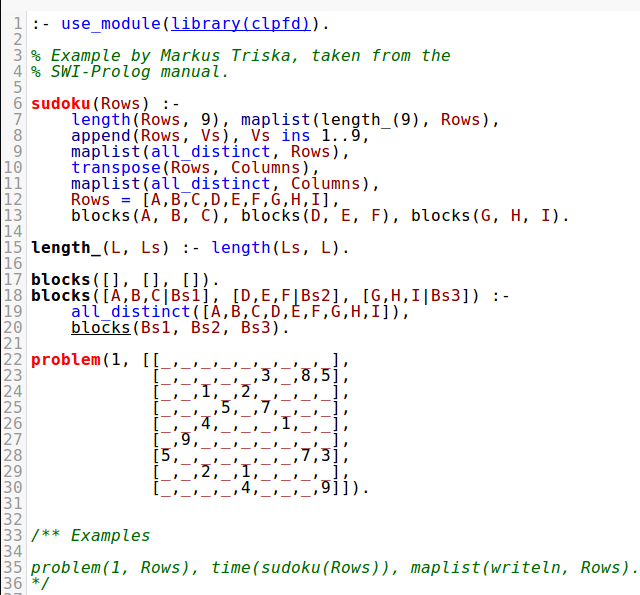

Prolog mode
MIME types defined: text/x-prolog.
The Prolog mode aims at smart indentation and basic coloring. As the Prolog language lacks reserved words, its syntax may be extended using opertor declarations and terms can, depending on their context, be either data, goals or code, meaningful coloring of Prolog code requires deep analysis of the entire file and its imported depedencies.
Enhanced coloring is provided by means of an addon that relies on support from a Prolog HTTP server which analyses the code and returns a sequence of semantically annotated tokens. Below is a screenshot of the result, showing the same code as above.
